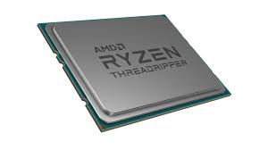

Az AMD logikai chipekkel kezdte tevékenységét 1969-ben, majd 1975-ben belépett a RAM-üzletágba. Még ugyanebben az évben visszafejtéssel (reverse-engineering) elkészítette az Intel 8080 mikroprocesszorának klónját. Ez alatt az időszak alatt készített egy bit-slice elemekből álló processzor-szériát (Am2900, Am29116, Am293xx)
Az Athlon az AMD cég védjegye különböző, általa tervezett és gyártott x86 processzorainak elnevezésére. Az Athlon név az angol decathlon, azaz tízpróba szóból származik.
Az első natív négymagos processzorok. 65 nm-es gyártástechnológia Cache:hárommagosoknál L2 3X512 L3 2 MB
45 nm-es gyártástechnológia Cache:hárommagosoknál: L2: 3X512 L3: 6 MB
A K8 processzor a K7 architektúra komoly továbbfejlesztése, a következő újdonságokkal: az utasításkészlet kiterjesztése az x86-64 64 bites utasításkészletre (AMD64), egy processzorra integrált memóriavezérlő, és egy igen nagy teljesítményű pont-pont összeköttetésű multiprocesszor-képes busz megvalósítása, amit HyperTransportnak hívnak. A K8-at kezdetben 130 nm gyártástechnológiával (akárcsak elődjét a K7-et) szerverek és munkaállomásokban láthattuk először Socket 940-es foglalattal: Opteron és Athlon 64 FX néven.
2011-ben jelent meg az AMD Bulldozer architektúra, ezután viszont az AMD processzorok teljesítménye jelentősen elmaradt az Intel Core chipjeitől így jelentős részesedést veszített. A Ryzen a Zen mikroarchitektúra első, a fogyasztók számára megvásárolható implementációja. A Ryzen kiadásával az AMD ismét belépett a felső-kategóriába, alternatívát nyújtva az I7-es processzoroknak.[5] Az AMD processzorai jobb többszálas teljesítményt nyújtanak azonos/alacsonyabb árért cserébe.
A threadripper a ryzen széria legerősebb processzora.
ryzen threadripper 3990x Alapára 4000 dollár. specifikációk: 64 core, akár 4.3Ghz órajel, tr4 socket, és 280w fogyasztás